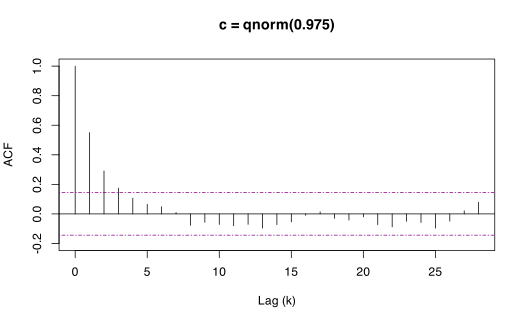
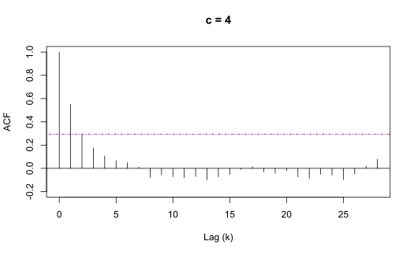

This vignette builds a framework for tuning the block-selection algorithms in blocklength. Both the Hall, Horowitz, and Jing (1995) (“HHJ”) and Politis and White (2004) (“PWSD”) methods require the user to select somewhat arbitrary parameters which may affect the reliability of the block-length optimization. We will go through examples that present problematic output and understand how to diagnose and remedy these situations under both the HHJ and PWSD frameworks.
Tuning Parameters
This section will discuss the tuning parameters of each optimization method. Though some parameters are set to a default, often times manual inspection and adjustments will need to be made to identify and remedy problematic solutions such as local optima or corner solutions.
An overview of the tuning parameters:
HHJ
The accuracy of hhj() depends on the choice of two tuning parameters. The first is the size of the subsample series to perform the cross-validation over. This is the argument sub_sample, or the parameter \(m\) in Hall, Horowitz, and Jing (1995). At this stage \(m\) is unknown, but there are some restrictions \(m\) must follow. Note that hhj() is a computationally intensive procedure and may take some time, especially as the length of the series becomes large. Employing parallelization and adjusting the grid search parameters to streamline the search process may help.
Since hhj() must iterate over multiple subsamples it must be that \(m < n\) where \(n\) is the length of the series provided in argument series, i.e. length(series). More specifically, it must be that
\[ m^{-1} + n^{-1}m = o(1) \text{ as } n \rightarrow \infty \ . \]
As a default, sub_sample = NULL which sets \(m = n^{1 / 5} * n^{1 / k}\) satisfying the above restrictions. Users can override this by directly setting \(m\) as some numeric constant supplied to subsample. Ideally, \(m\) should be an integer, but hhj() will round this to a whole number automatically.
Though \(m\) is almost entirely arbitrary, the second tuning parameter for hhj() is less so. This is the pilot_block_length argument, or the parameter \(l\) in Hall, Horowitz, and Jing (1995) also denoted as \(l^{*}_n\) in the Lahiri (2003) treatment. The pilot_block_length is the block-length used to perform the initial block-bootstrap of series.
To reduce the effect of the choice of \(l\) on the accuracy of the optimization, hhj() replaces \(l\) with the previous iteration’s estimate of the optimal block-length \(l^*\) (or \(\hat{l^0_n}\) in Lahiri (2003)), repeating until convergence or the iteration limit implied by n_iter is reached. The number supplied to pilot_block_length is only used on the first iteration of hhj() hence it is referred to as a pilot parameter.
In practice, hhj() estimates \(l^*\) by minimizing an \(MSE\) function for each possible block-length using a block-bootstrap of a subsample from series with length \(m.\) The block-length that minimizes the \(MSE\) on a given subsample is then used to estimate \(l^*\) which replaces pilot_block_length for the next iteration. However, because we minimize the \(MSE\) over a subsample of length \(m\), we must first scale this block-length back to the original series of length \(n.\) This is accomplished by employing the Richardson Extrapolation, a sequence acceleration technique from numerical analysis first developed in 1911, see Richardson and Glazebrook (1911).
In this sense, hhj() actually estimates the optimal block-length of the subsample \(\hat{l}_m\) which is then scaled up to the full series such that
\[l = \hat{l}_m (n/m)^{1/k}, \ \text{where} \ k = \{3, 4, 5\} \ ,\] and \(k\) depends on the context of the object of estimation.
PWSD
Like hhj(), the accuracy of pwsd() is also subject to a somewhat arbitrary choice of tuning parameters. Unlike the HHJ method, however, the tuning parameters for pwsd() deal exclusively with the way the method adapts to the underlying correlation structure of the series whereas in hhj(), tuning parameters set the lengths and sizes from which to cross-validate subsamples. Note that pwsd() will set all the tuning parameters to recommended defaults so that only the argument data must be supplied.
Politis and White (2004) discuss their proposed defaults and some techniques to adjust tuning parameters largely in footnote c on page 59. The first tuning parameter of pwsd() is K_N, denoted \(K_N\) in Politis and White (2004). K_N takes some integer value that indicates the maximum number of lags for which to apply the implied hypothesis test over the correlogram of the series. That is, K_N is the number of consecutive lags in the correlogram that must appear insignificant in order to select the optimal bandwidth \(M\) for the flat-top lag window.
Politis and White (2004) suggest letting \(M = 2\hat{m}\) where \(\hat{m}\) is the smallest positive integer such that the following K_N consecutive lags appear insignificant in respect to some level of significance, discussed later. By default, K_N = NULL which sets \(K_N = max(5, \lceil \ \log_{10}N \ \rceil)\) per the suggestion of Politis and White (2004). Note \(K_N\) must be some non-decreasing integer valued function of \(N\) such that \(K_N = o(\log_{10}N)\) where \(N\) is again the length of the series supplied to data =, i.e. nrow(data).
The next tuning parameter M_max (denoted as \(M_{max}\) below) acts as an upper-bound for \(M\) such that
\[2 * \hat{m} > M_{max} \Rightarrow M = M_{max} \ .\]
Thus, M_max allows us to expand or contract the maximum size of the bandwidth for the flat-top lag windows of Politis and Romano (1995). If it is the case that \(2 * \hat{m} < M_{max}\), then only changing the value of M_max will not have an affect on the method’s accuracy.
We can inspect the output of pwsd() to assess any interim values that may help us understand how to further tune the calculation. For example, we can find the value estimated as \(\hat{m}\) by inspecting the $parameters component of pwsd() output objects, i.e. objects where class = "pwsd".
To show this lets first do some housekeeping and attach blocklength.
library(blocklength)
set.seed(32)Now, we generate a stationary \(AR(1)\) time series and select an optimal block-length using the PWSD method:
# Generate an AR(1) simulation
sim <- stats::arima.sim(list(order = c(1, 0, 0), ar = 0.5),
n = 500, innov = rnorm(500))
# Run the PWSD method and suppress output of the correlogram
b <- pwsd(sim, correlogram = FALSE)
# Inspect interim parameters
b$parameters
#> n k c K_N M_max b_max m_hat M rho_k_critical
#> [1,] 500 1 1.959964 5 28 68 3 6 0.1439999Here we can see that m_hat = 3 and M_max = 28 so no censoring is occurring.
In certain situations, we may wish to forego the implied hypothesis test to estimate m_hat and instead set m_hat directly by supplying some integer to pwsd(m_hat = ). In general, the implied hypothesis test should not be used unless specific characteristics are known about the data-generating process of the underlying series or issues with the correlogram output are present.
The next tuning parameter is b_max = which acts as an upper-bound for the optimal block-length. This can be extracted from ‘pwsd’ class objects using $BlockLength. If pwsd() estimates some value for the optimal block-length such that b_Stationary > b_max or b_Circular > b_max then b_Stationary/b_Circular will be set to b_max. By default, b_max = NULL which sets b_max = ceiling(min(3 * sqrt(n), n / 3)). We can inspect the output of pwsd() to see if the selected block-lengths are being censored by b_max.
# Print block-length estimates
b$BlockLength
#> b_Stationary b_Circular
#> data 9.327923 10.67781
# Test if optimal block-length is censored by b_max
b$parameters[, "b_max"] == b$BlockLength
#> b_Stationary b_Circular
#> data FALSE FALSE
# Print the upper-bound
b$parameters[, "b_max"]
#> b_max
#> 68Here we can see our optimal block-length is between 8 and 9 observations long. These are far below the default maximum value of 68.
The final tuning parameter for pwsd() is the argument c also denoted as \(c\) in Politis and White (2004). At a high-level \(c\) acts as a pseudo confidence-level to conduct the implied hypothesis tests on the series’ correlogram. Thus, it must be that \(c > 0.\) If the auto-correlation of a given lag \(k\) is above some critical value \(\rho_{critical}\), then that lag is considered significant. This critical value is defined as
\[\rho_{critical} = c\sqrt{\log_{10}N / N}.\]
Politis and White (2004) suggest a value of \(c = 2\) but by default, pwsd() treats \(c\) as a standard two-tailed 95% confidence interval by setting c = qnorm(0.975). This is quite close to the suggested value of 2. Using the correlogram output, either by setting correlogram = TRUE or using the corresponding plot method, we can visualize \(\rho_{critical}\) as the dashed magenta lines that form the significance bands on the plot.
# Print rho_k_critical
b$parameters[, "rho_k_critical"]
#> rho_k_critical
#> 0.1439999
# Plot correlogram from previous selection
plot(b, main = "c = qnorm(0.975)", ylim = c(-0.2, 1))
# Expand confidence level and plot again
b1 <- pwsd(sim, c = 4, correlogram = FALSE)
plot(b1, main = "c = 4", ylim = c(-0.2, 1))
Diagnosing Problematic Solutions
Problematic solutions can render block-length selections unreliable and inconsistent, thus it is important to inspect the interim output of the \(MSE\) function for hhj() and the respective Correlogram output of pwsd().
HHJ
If plots = TRUE the \(MSE\) function will be plotted and output to the console for each iteration of the algorithm. If plots = FALSE, then this interim output will be suppressed; however, users can save the output of hhj() and then access these plots later by using the corresponding S3 plot method, just like how we plotted the output for pwsd() above.
The main issues that occur with the hhj() optimization method are solving for local minima or corner solutions of the \(MSE\) function. Ideally, the \(MSE\) plot will exhibit a convex shape, such as the plot depicted below:
# Select a block-length using HHJ method
b2 <- hhj(sim, sub_sample = 10, k = "bias/variance", plots = FALSE)
#> Pilot block length is: 3
#> Registered S3 method overwritten by 'quantmod':
#> method from
#> as.zoo.data.frame zoo
#> Performing minimization may take some time
#> Calculating MSE for each level in subsample: 10 function evaluations required.
#> Chosen block length: 11 After iteration: 1
#> Converged at block length (l): 11
plot(b2)

However, this is often times not the case and the \(MSE\) plot may appear concave. An example of a problematic \(MSE\) plot is illustrated below.
# Generate a AR(2) simulation
sim2 <- stats::arima.sim(list(order = c(2, 0, 0), ar = c(0.5, 0.3)),
n = 500, innov = rnorm(500))
# Select a block-length using HHJ method
b3 <- hhj(sim2, plots = FALSE)
#> Pilot block length is: 3
#> Performing minimization may take some time
#> Calculating MSE for each level in subsample: 12 function evaluations required.
#> Chosen block length: 25 After iteration: 1
#> Converged at block length (l): 25
plot(b3)

Here we see the \(MSE\) function is minimized by taking the largest block-length available, in this case 25. This is problematic because it may be that some larger block-length is truly optimal. Had we evaluated the \(MSE\) over a larger range of possible block-lengths, this may have been captured. Similarly, it may be that the smallest (leftmost) block-length is found to minimize the \(MSE\) function.
This is the main issue with concavity. Such plots often indicate that the solution reached is some local minimum, and that changing the tuning parameters of hhj() will likely lead to a new and equally unreliable estimate.
In such cases, it may help to shrink the sub_sample size, \(m.\) As discussed previously the choice of pilot_block_length is less important but users are encouraged to try a range of combinations for the tuning parameters. It may be the case that no permutation of pilot_block_length and sub_sample produce a convex \(MSE\) plot. In this situation, users are encouraged to benchmark the results of hhj() with other methods provided in this package.
PWSD
Politis and White (2004) are explicit that manual inspection of the correlogram is necessary, especially in cases where \(\hat{m},\) and subsequently the optimal block-length \(\hat{b}_{opt},\) are large. By looking at the correlogram and the significance bands corresponding to \(\pm \ c\sqrt{\log_{10}{N}/N},\) we can asses how sensitive the selection of \(\hat{m}\) is to the tuning parameters.
Specifically, Politis and White (2004) define \(\hat{m}\) as the smallest integer such that the correlogram remains within the significance bands for at least \(K_N\) lags after the lag \(\hat{m}.\)
To illustrate this, consider a problematic correlogram arising from an \(AR(1)\) simulation of 500 observations with \(\rho = 0.3 \ ,\) named pcorr in the code below. Note pcorr has been loaded behind the scenes so it is not randomly generated each time the vignette is built.
# Select a block-length using PWSD method
b4 <- pwsd(pcorr, K_N = 5, correlogram = FALSE)
plot(b4, main = "Problematic Correlogram")
# Output m_hat to console
b4$parameters[, "m_hat"]
#> m_hat
#> 3
If we are to follow the Politis and White (2004) rule for estimating \(\hat{m}\) explicitly where \(K_N = 5\), then it must be that \(\hat{m} = 3\) because 3 is the smallest lag \(k\) such that the following 5 lags are insignificant (within the dashed bands). If we were to adjust \(c\) or \(K_N\) slightly and re-estimate \(\hat{m}\) once more it would be radically different. For example if we keep \(c\) as the default qnorm(0.975) but change \(K_N = 6,\) then we would be led to \(\hat{m} = 9.\)
# Select block-length using PWSD method
b5 <- pwsd(pcorr, K_N = 6, correlogram = FALSE)
plot(b5, main = "Problematic Correlogram 2")
# Output m_hat to console
b5$parameters[, "m_hat"]
#> m_hat
#> 9
Alternatively, when we keep \(K_N = 5\) but change \(c\) to mimic a 99% confidence level by setting c = qnorm(0.995), we get the following output with much wider bands of significance:
# Select a block-length using PWSD method
b6 <- pwsd(pcorr, c = qnorm(0.995), correlogram = FALSE)
plot(b6, main = "Problematic Correlogram 3")
# Output m_hat to console
b6$parameters[, "m_hat"]
#> m_hat
#> 1
Here we can see that moving these significance bands farther apart changes the estimation to \(\hat{m} = 1.\) Overall, the sensitivity of \(\hat{m}\) to the tuning parameters is concerning and users should proceed with vigilance.
The default tuning parameters for pwsd() are merely suggestions, and Politis and White (2004) provide a rule-of-thumb when users are faced with problematic solutions such as the correlograms presented above. They recommend that users always take into account their experience and any knowledge of the data set at-hand, but also note that flat-top lag window spectral estimators preform best with small values of \(M\) and that users should favor the smallest or most simple model over a more complex model with similar explanatory power. In this light, Politis and White (2004) recommend setting \(\hat{m} = 1\) in the presence of an unclear correlogram and lack of reasonable intuition. Note that pwsd() will automatically set \(\hat{m} = 1\) if there are no significant lags in the correlogram. To accomplish this manually, we can set M_max = 1 to force \(\hat{m} = 1.\)
However, if some knowledge of the underlying data-generating process is known, we may want to lean on intuition. For example, benchmark interest rates are often derived from some daily interest rate using a 30-day (or 90-day) compound average. In such circumstances, we may want to examine at least 30 (90) lags of the correlation structure and consider completely overriding the estimation of \(\hat{m}\) by setting the argument to m_hat = 30 or m_hat = 90.